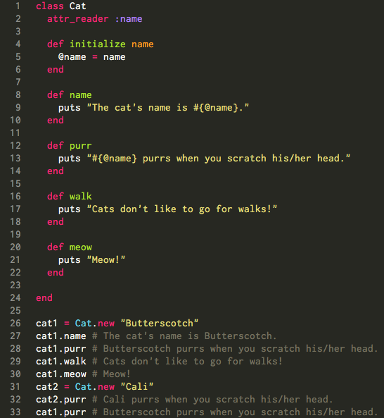

"The journey of a thousand miles begins with a single step." - Lao Tzu
"The journey of a thousand miles begins with a single step." - Lao Tzu
Ruby classes are a great way to hold a collection of methods that can be used on an instance of the class. We have been using methods of a variety of classes - String, Integer, Array, and Hash primarily. The cool thing about Ruby is that you can create your own class and methods. Every time you create a new instance of a class, it will be able to call any of the methods from the class.
Here is a very simple class that has a few methods within it, just to make the point of creating methods for a particular class, creating new instances of a class, and calling methods on the instances.

In this very elementary example, we can see that an instance variable, @name, is initialized upon creation of a new instance of the Cat class. The instance variable can be used in any of the methods created within the class. The methods created in the class can be called on new instances of the class (as we can see at the bottom, outside of the class, where two new instances are created). If I were to call the .purr method on an instance of the String class, we would get an error that there is no purr method for the String class.
Of course there are much more interesting methods we can write to bring the Cat class to life, but for now, hopefully this gives someone new to Ruby a basic understanding of classes!